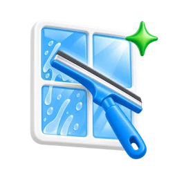

Xizmatni tanlang
Kerakli xizmatni tanlab, qisqa arizaga o‘ting.
Ichki va tashqi oynalar, romlar va tokchalarni professional vositalar bilan yuvamiz.

Sifat kafolatiNatija yoqmasa, bepul qayta tozalaymizGoClean Toshkentda oynalarning ichki va tashqi yuzalari, romlari va tokchalarini yuvadi. Sahifada narx birligi 1 m² sifatida ko‘rsatilgan; hisobga qaysi yuza va ishlar kiritilishi operator bilan aniqlashtiriladi.
Maydonni aniq bilmasangiz ham ism va telefon bilan ariza qoldirishingiz mumkin. Taxminiy o‘lcham ma’lum bo‘lsa, operatorga aytish hisobni aniqlashtirishga yordam beradi, lekin oynani mustaqil o‘lchash majburiy emas.
Ochilmaydigan, tashqaridan kirish qiyin yoki boshqa kirish cheklovi bor oynalarni oldindan ayting. Ishni bajarish imkoniyati va usuli operator bilan kelishiladi. Xavfli tashqi o‘lchov qilish yoki derazaga chiqish kerak emas.
Bo‘yoq, yelim yoki himoya plyonkasi izlari bo‘lsa, ularni alohida ko‘rsating. Bunday izlarni ketkazish imkoniyati va ish tarkibiga kirishi oldindan aniqlashtiriladi. To‘r yoki jalyuzini tozalash kerak bo‘lsa, ularning xizmatga kiritilishi va narxini ham operator bilan kelishing.
Tavaqa uchun summa bilan m² uchun summa bir xil hisob birligi emas. Takliflarni bir xil oynalar, yuza va kelishilgan ishlar tarkibi bo‘yicha solishtiring. GoClean sahifasida narx birligi m² ko‘rsatilgan, amaldagi hisoblash tartibini operator tushuntiradi.
GoClean моет внутренние и наружные поверхности окон, рамы и подоконники в Ташкенте. На странице цена указана за 1 м²; какие поверхности и работы войдут в расчёт, уточняется с оператором.
Заявку можно оставить по имени и телефону, даже если точная площадь неизвестна. Если примерные размеры известны, сообщите их оператору — это поможет уточнить расчёт, но самостоятельно измерять окна необязательно.
Заранее сообщите о неоткрывающихся окнах, затруднённом наружном доступе и других ограничениях. Возможность и способ выполнения работы согласуются с оператором. Не нужно проводить опасные наружные замеры или выходить на окно.
Отдельно сообщите о следах краски, клея или защитной плёнки. Возможность их удаления и включение в состав работ уточняются заранее. Если нужно очистить сетки или жалюзи, согласуйте с оператором их включение в услугу и стоимость.
Цена за створку и цена за м² — разные единицы расчёта. Сравнивайте предложения для одинаковых окон, площади и согласованного состава работ. На странице GoClean цена указана за м², а действующий порядок расчёта объяснит оператор.
Kerakli xizmatni tanlab, qisqa arizaga o‘ting.
Faqat ism va telefon raqamingiz yetarli.
Manzil, vaqt, xizmat tarkibi va narxni telefonda aniqlashtiring.